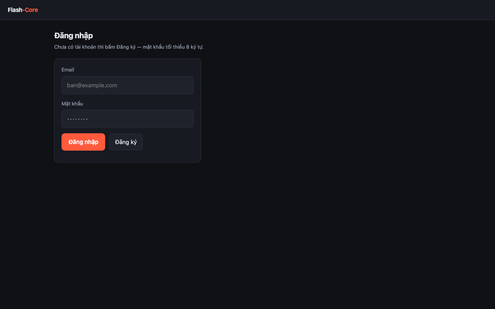
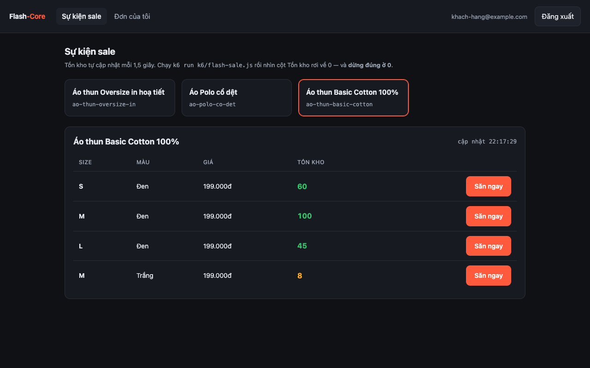
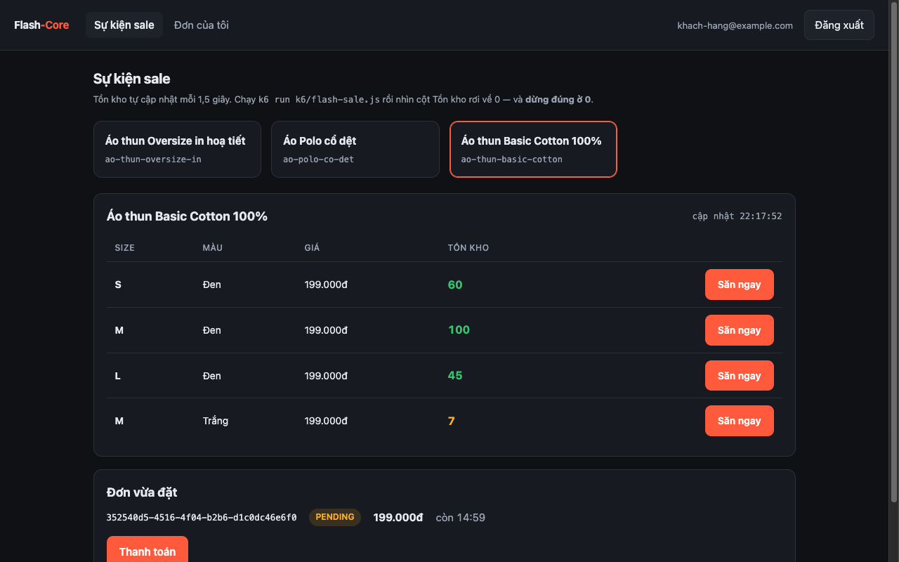
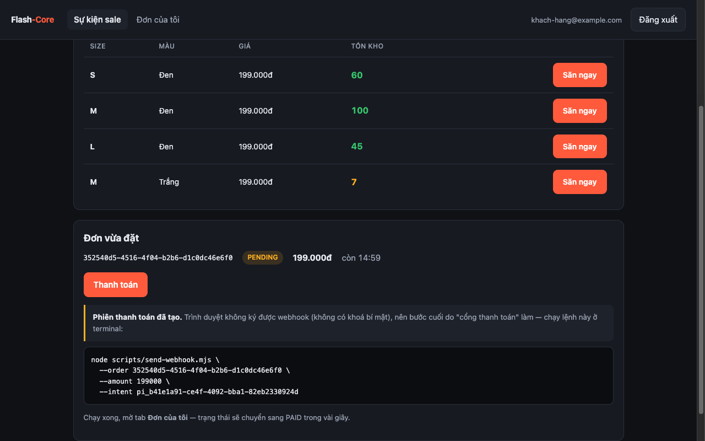
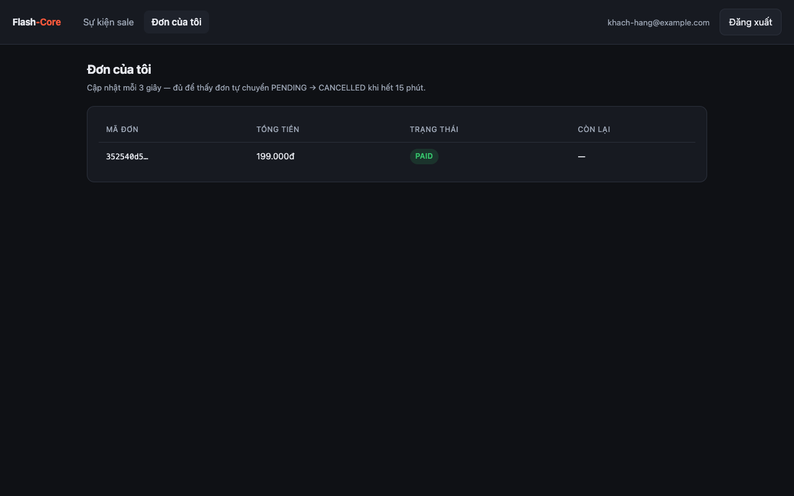
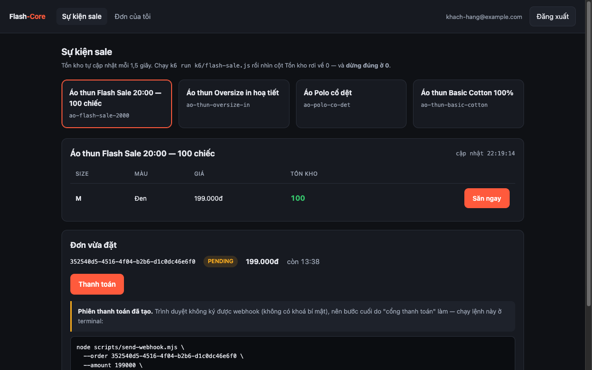
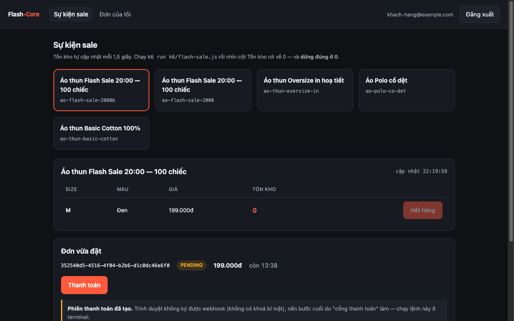

Demo & thuyết trình dự án khi phỏng vấn
File này sở hữu đúng hai thứ: tech stack nào giải quyết vấn đề gì, và kịch bản đứng trước người phỏng vấn.
Nó không chứa kiến thức kỹ thuật — mọi câu "vì sao" trỏ về
tech-playbook.md, mọi quyết định trỏ về, mọi con số trỏ vềadr/. Nếu thấy mình sắp giải thích một cơ chế ở đây, dừng lại và đặt link.specs/
Phần 0 — Nghiệp vụ và luồng làm việc, nhìn bằng ảnh
Đọc phần này trước. Không hiểu app làm gì thì mọi thứ kỹ thuật phía dưới đều vô nghĩa.
Nghiệp vụ trong bốn câu
Một shop bán áo thun mở flash sale: một mẫu áo, số lượng giới hạn theo từng biến thể (size × màu), mở bán đúng giờ. Hàng nghìn người bấm "Săn ngay" trong vài giây.
Việc khó không phải bán hàng — mà là bán đúng số lượng có thật. Còn 100 chiếc thì phải bán ra đúng 100, không phải 101. Bán vượt là mất tiền thật (hoàn đơn, xin lỗi khách) và mất uy tín; bán thiếu là bỏ doanh thu.
Và vì tiền tham gia vào, hệ thống còn phải trả lời được: đơn chưa trả tiền thì giữ chỗ bao lâu, ai trả tiền rồi mà đơn đã huỷ thì xử lý sao, worker chết giữa chừng thì có mất việc không.
Vòng đời một đơn hàng
Đây là thứ cần thuộc trước khi mở UI — mọi màn hình chỉ là cách nhìn vào một trong ba trạng thái này:
┌──────────────────────────────────────────┐
bấm "Săn ngay" │ │
───────────────► PENDING ──── webhook "đã trả tiền" ────► PAID
(trừ kho NGAY) │ giữ chỗ 15 phút (kết thúc)
│
└──── quá 15 phút, chưa trả tiền ────► CANCELLED
(worker tự huỷ + TRẢ HÀNG VỀ KHO)Ba điều đáng chú ý, và cả ba đều là quyết định nghiệp vụ chứ không phải kỹ thuật:
- Trừ kho ngay lúc bấm, không đợi trả tiền. Nếu đợi, hai người cùng "giữ" một chiếc áo và người trả tiền sau sẽ mất hàng — tệ hơn nhiều.
- Giữ chỗ 15 phút rồi tự huỷ. Không có nó thì người bấm mà không trả tiền sẽ giam hàng vĩnh viễn.
- Huỷ thì phải trả hàng về kho, và trả đúng một lần. Trả hai lần là tự sinh ra hàng không tồn tại.
Luồng dùng app — bảy bước, có ảnh thật
Về dữ liệu trong các ảnh dưới đây. Chúng được chụp trên một database riêng và sạch (
flashcore_demo) với ba mẫu áo dựng đúng như một shop thật. Database dev thường lẫn nhiều sản phẩm rác do chính quá trình phát triển sinh ra —Áo benchmark <số>dok6/seed-target.jstạo mỗi lần chạy load test,Seed Product <số>donpm run seedtạo 10.000 dòng để đoEXPLAINở Phase 2, và vài mẫu tên kiểuÁo demo…/Áo rút dây mạngdo người viết tài liệu tạo khi kiểm thử. Chúng không phải tính năng của app — nếu anh mở DB dev và thấy chúng thì đó chỉ là rác dữ liệu, xoá được hoặc bỏ qua được.
Bước 1 · Đăng nhập

Chưa có tài khoản thì bấm Đăng ký — nó tự đăng nhập luôn. Token nằm trong cookieHttpOnly, JavaScript không đọc được (đó là chủ đích, chống XSS lấy mất token).
Bước 2 · Màn "Sự kiện sale" — nơi nhìn thấy tồn kho

Phía trên là lưới mẫu áo (ở đây: Basic Cotton, Polo, Oversize); bấm một mẫu thì bảng bên dưới hiện các biến thể (SKU) của nó. Mỗi dòng là một tổ hợp size × màu với tồn kho riêng:S/Đen 60 · M/Đen 100 · L/Đen 45 · M/Trắng 8. Vậy "áo đen size M" hết không có nghĩa "áo trắng size M" hết — đó là ý nghĩa của "tồn kho theo SKU biến thể". Số 8 hiện màu vàng vì sắp hết; 0 sẽ đỏ và nút chuyển thành "Hết hàng". Con số tự cập nhật mỗi 1,5 giây, nên mở hai tab sẽ thấy chúng đổi cùng nhau.
Bước 3 · Bấm "Săn ngay" → đơn giữ chỗ

Bấm "Săn ngay" ở dòngM/Trắng — tồn kho tụt 8 → 7 ngay lập tức, và một đơn PENDING hiện ra kèm đếm ngược 14:59. Đơn đã giữ chỗ nhưng chưa trả tiền. Nếu hết hàng thì nút chuyển thành "Hết hàng" và bấm sẽ báo lỗi 409 — đó là trạng thái bình thường của flash sale, không phải lỗi hệ thống.
Bước 4 · Bấm "Thanh toán"

Trang không tự đánh dấu đã trả tiền được — nó chỉ tạo một phiên thanh toán rồi hiện ra lệnh để copy. Đó là điểm cần nhấn khi demo: trình duyệt không giữ khoá bí mật nên không ký nổi webhook. Nếu nó ký được thì việc verify chữ ký ở phía server là vô nghĩa, và ai cũng đánh dấu đơn của người khác là "đã trả tiền" được.Bước 5 · Chạy lệnh đó ở terminal — đóng vai cổng thanh toán
node scripts/send-webhook.mjs \
--order <order-id> --amount 299000 --intent <payment-intent-id>Server nhận, verify chữ ký, trả 204 ngay rồi đẩy việc nặng vào hàng đợi. Worker xử lý và đổi đơn sang PAID.
Bước 6 · Tab "Đơn của tôi" — thấy kết quả

Trạng thái đã là PAID, cột "Còn lại" thành— vì đơn không còn đếm ngược nữa. Nếu để đơn quá 15 phút mà không chạy lệnh trên, chính bảng này sẽ tự chuyển nó sang CANCELLED và tồn kho được cộng trả lại.
Bước 7 · Cảnh đáng giá nhất — 1.000 người bấm cùng lúc
Đây là lý do cả dự án tồn tại. Chọn một mẫu có stock = 100:

Một mẫu riêng dựng sẵn cho benchmark:Áo thun Flash Sale 20:00 — 100 chiếc. Trước khi bắn: tồn kho 100, nút "Săn ngay" còn bấm được.
Rồi chạy k6 (1.000 người dùng ảo, mỗi người bấm mua một lần):
201 (bán được): 100 ← đúng 100
409 (hết hàng): 900 ← trạng thái nghiệp vụ, KHÔNG phải lỗi
4xx khác: 0
5xx: 0
Sau một giây: tồn kho 0 màu đỏ, nút thành "Hết hàng", và dừng đúng ở 0 — không có nhịp cập nhật nào hiện số âm. Bán ra đúng 100 chiếc trên 1.000 người bấm.Demo trên terminal — bốn cảnh, và chúng mạnh hơn UI
Giao diện cho thấy cái gì xảy ra. Terminal cho thấy vì sao tin được. Bốn output dưới đây là kết quả chạy thật, copy nguyên văn.
Cảnh 1 · k6 — 1.000 người bấm, bán ra đúng 100
execution: local
script: k6/flash-sale.js
scenarios: (100.00%) 1 scenario, 1000 max VUs, 1m30s max duration
* flash_sale: 1 iterations for each of 1000 VUs
running (0m01.0s), 0340/1000 VUs, 660 complete and 0 interrupted iterations
running (0m02.0s), 0079/1000 VUs, 921 complete and 0 interrupted iterations
=== Kết quả benchmark ===
Chiến lược: optimistic
Pool max: 10
201 (bán được): 100 ← phải đúng 100
409 (hết hàng): 900 ← bình thường, KHÔNG phải lỗi
4xx khác: 0 ← phải 0
5xx: 0 ← phải 0
p95 (ms): 2078.8
throughput (rps): 470.0
flash_sale ✓ [ 100% ] 1000 VUs 0m02.1s/1m0s 1000/1000 iters, 1 per VUChỗ cần chỉ tay vào: bốn dòng đếm riêng 201 / 409 / 4xx / 5xx. Gộp chúng lại thành một "error rate" thì báo cáo sẽ ghi 90% lỗi trong khi hệ thống hoạt động hoàn hảo — 900 lần 409 là hết hàng, đúng như kỳ vọng khi chỉ có 100 chiếc.
Cảnh 2 · Một correlationId đi xuyên hai tiến trình
Đặt đơn với một id do mình tự đặt:
curl -X POST localhost:3000/orders \
-H 'x-correlation-id: don-hang-20h00-cua-khach' \
-H "Idempotency-Key: $(uuidgen)" \
-d '{"skuId":"...","quantity":1}'Rồi tìm nó trong log của cả hai tiến trình:
grep don-hang-20h00-cua-khach api.log worker.log[API] OrderService Đặt đơn thành công
[API] POST /orders → 201 (16ms)
[WORKER] LoggingMailSender Gửi email (bản log của Phase 4)Chỗ cần chỉ tay vào: dòng thứ ba đến từ một process khác, chạy sau khi request đã kết thúc từ lâu — mà vẫn mang đúng id đó. Không có nó thì khi khách báo "tôi đặt hàng lúc 8 giờ tối, bị lỗi", việc tra log là lọc theo mốc thời gian giữa hàng nghìn dòng của hàng trăm request đan xen. Có nó thì một lệnh grep ra đủ chuỗi.
Cảnh 3 · Giết Redis — /ready chết, /health sống
docker stop flashcore-redis
curl -o /dev/null -w "ready: %{http_code}\n" localhost:3000/ready
curl -o /dev/null -w "health: %{http_code}\n" localhost:3000/healthready: 503
health: 200{
"code": "NOT_READY",
"message": "Instance chưa sẵn sàng nhận traffic",
"details": { "database": "up", "redis": "down", "shuttingDown": false },
"correlationId": "9da35d22-03eb-4da0-8117-d4a76ed202f2"
}Chỗ cần chỉ tay vào: /health vẫn 200. Hai endpoint trả lời hai câu khác nhau — "có nên gửi traffic vào đây không" và "process còn sống không". Gộp chúng lại là lỗi cấu hình đắt nhất khi deploy: /health fail sẽ khiến orchestrator restart container, mà restart app thì không chữa được Redis — chỉ thêm thời gian khởi động vào giữa sự cố.
Cảnh 4 · Hệ thống tự báo cáo về chính nó
curl -s localhost:3000/metrics | grep -E "^orders_placed_total|^outbox_pending"orders_placed_total{result="created"} 1
inventory_reserve_duration_seconds_count{strategy="optimistic"} 1
outbox_pending 0Chỗ cần chỉ tay vào: nhãn result và strategy. Một metric http_requests_total{status="409"} chỉ nói "có 409"; nó không phân biệt được hết hàng với SKU không tồn tại — nên metric nghiệp vụ phải đếm ở trong service, nơi biết lý do. Và outbox_pending tăng đều nghĩa là relay đã chết, nhìn thấy được rất lâu trước khi có ai báo "không nhận được email".
Cảnh thứ năm — "rút dây mạng" — nằm ở
Phần 3vì nó cần vài phút thao tác. Đó là cảnh mạnh nhất trong cả buổi demo: giết worker giữa chừng, bật lại, rồi đếm ra 20 / 0 / 20.
Ai làm gì phía sau — ba thành phần
| Thành phần | Chạy bằng lệnh | Việc của nó |
|---|---|---|
| API | npm run dev | Nhận request, trừ kho, tạo đơn, verify chữ ký webhook. Phục vụ luôn trang web ở localhost:3000 |
| Worker | npm run worker | Chạy nền, không phục vụ HTTP: gửi email, tự huỷ đơn quá hạn, xử lý sự kiện thanh toán |
| Postgres + Redis | npm run up | Postgres giữ sự thật về tồn kho; Redis giữ hàng đợi việc và bộ đếm rate limit |
Thiếu worker thì app vẫn đặt được đơn — nhưng đơn sẽ không bao giờ tự huỷ, và email không bao giờ gửi. Đó là lý do demo phải mở hai terminal.
Phần 1 — Dự án là gì, nói trong ba độ dài
Người phỏng vấn hỏi "kể về dự án của em" bằng ba kiểu, và mỗi kiểu cần một câu trả lời khác nhau về độ dài, không phải về nội dung. Chuẩn bị sẵn cả ba.
30 giây — khi họ mới mở CV ra
"Em làm một API engine cho hệ thống săn flash sale áo thun. Bài toán cốt lõi là concurrency: một mẫu áo có 100 chiếc, 1.000 người bấm 'Săn ngay' trong 3 giây, và phải bán ra đúng 100 — không phải 101.
Em làm ba chiến lược chống bán vượt, đổi bằng một biến môi trường, rồi đo bằng k6 để so sánh. Cả ba đều cho bán vượt bằng 0, nhưng số đo có ba kết quả ngược trực giác — đó là phần em học được nhiều nhất."
Câu cuối là cái móc. Người phỏng vấn tử tế sẽ hỏi "ngược trực giác thế nào?" — và lúc đó anh đang ở trên sân của mình.
3 phút — câu trả lời mặc định
Đi theo đúng bốn bước này, đừng kể theo thứ tự phase:
| Bước | Nói gì | Chi tiết ở |
|---|---|---|
| 1. Bài toán | Flash sale: tồn kho giới hạn theo SKU biến thể (size × màu), nghìn người cùng bấm. Bán vượt = mất tiền thật + mất uy tín; bán thiếu = bỏ doanh thu | — |
| 2. Vì sao nó khó | if (stock > 0) stock-- chắc chắn sai, không phải hiếm khi sai. Và database không báo lỗi gì cả — nó không hỏng, nó chỉ sai | playbook §Phase 3 |
| 3. Cách em giải | Đưa điều kiện vào chính câu ghi: UPDATE … WHERE stock >= ?. An toàn ngay ở Read Committed, không cần đổi isolation level | playbook §Phase 3 |
| 4. Bằng chứng | 200 request song song → đúng 100 đơn, ở cả ba chiến lược. k6 1.000 VU → bán vượt = 0 ở cả bốn cấu hình | spec Phase 3 |
Dừng ở đây. Đừng kể tiếp Phase 4, 5, 6 nếu họ chưa hỏi — kể hết một lượt là mất cơ hội để họ đào sâu vào chỗ mạnh nhất.
10 phút — khi họ nói "kể chi tiết đi"
Thêm đúng ba câu chuyện ở Phần 4 — mỗi câu chuyện là một bug thật kèm số liệu. Không thêm tính năng, thêm câu chuyện.
Phần 2 — Tech stack: mỗi thứ giải quyết vấn đề gì
Đây là bảng để trả lời câu "vì sao em chọn cái này?" — câu mà người phỏng vấn dùng để phân biệt người chọn có lý do với người chọn theo trend.
| Công nghệ | Trong dự án nó làm gì | Vì sao nó, không phải cái khác |
|---|---|---|
| NestJS | Khung cho Modular Monolith: DI container ép ranh giới module ở tầng máy | Express thuần thì ranh giới module chỉ là quy ước, và DI phải tự dựng. NestJS chạy trên Express — không phải hai lựa chọn loại trừ nhau |
| TypeScript strict | Bắt lỗi ở compile-time, và code tự tài liệu hoá | — |
| Zod (không class-validator) | Validate ở biên; type suy ra TỪ schema nên không bao giờ lệch | class-validator cần decorator + class-transformer, và type khai hai lần ⇒ lệch được. ADR-002 |
| PostgreSQL 16 | Nơi duy nhất biết sự thật về tồn kho. Ba cơ chế dùng thật: UPDATE … WHERE, SELECT FOR UPDATE, FOR UPDATE SKIP LOCKED | Đây là công cụ chống bán vượt. Không có nó thì bài toán trở thành distributed transaction — khó hơn nhiều và không dạy được điều đang muốn học |
Prisma 7 + @prisma/adapter-pg | ORM, nhưng pg.Pool do mình cấu hình | Pool trở thành biến điều khiển được (DATABASE_POOL_MAX) — cần cho benchmark Phase 3, và cho Neon pooler ở Phase 7 |
$queryRaw ở đúng 1 file | SELECT FOR UPDATE và UPDATE … WHERE stock >= ? | Prisma không có API cho FOR UPDATE. Đây là "chạm giới hạn của ORM" — chọn có ý thức, và giới hạn lại trong một file (ADR-003) |
| Redis | Rate limit đăng nhập, và chiến lược chống bán vượt thứ ba (Lua kiểm-tra-và-trừ) | Phải là Lua: Redis chạy lệnh tuần tự một luồng nên script chạy trọn vẹn. GET rồi DECRBY từ Node chỉ đổi chỗ race condition |
| BullMQ | Hàng đợi, delayed job (huỷ đơn 15 phút), DLQ | Trên Redis đã có sẵn. Không cần Kafka — xem mục dưới |
| Outbox pattern | Chống dual write: sự kiện ghi cùng transaction với đơn | await db.save() rồi await queue.add() mà chết ở giữa thì mất việc, và try/catch không cứu được. ADR-006 |
| Argon2id | Băm mật khẩu | Memory-hard (19 MiB/lần) — GPU không song song hoá được như với bcrypt (chỉ tốn CPU) |
| HttpOnly Cookie + rotation | Access + refresh token, phát hiện token bị đánh cắp | JS không đọc được cookie ⇒ XSS không lấy được token. Rotation: dù ai dùng trước, lần thứ hai luôn lộ |
| Jest + Testcontainers | Integration test trên Postgres/Redis thật | Race condition không tồn tại trong thế giới của mock. Đây là lý do một hệ thống có coverage 92% vẫn bán vượt |
| k6 | Load test 1.000 VU, đếm riêng 201/409/4xx/5xx | Trộn 4xx với 5xx làm error rate mất hết ý nghĩa: 900 lần 409 là kết quả đúng, không phải lỗi |
| prom-client | 6 metric tự khai + bộ mặc định của Node, tại GET /metrics | Metric trả lời "đang có bao nhiêu"; log trả lời "chuyện gì đã xảy ra". Hai câu khác nhau, hai công cụ |
Pino + AsyncLocalStorage | correlationId đi xuyên cả worker | Truyền qua tham số thì chỉ cần một chỗ quên là đứt chuỗi, và chỗ quên đó không test nào bắt được. ADR-008 |
| Trang tĩnh 1 file cho UI | Nhìn thấy tồn kho rơi về 0 theo thời gian thực | FE ở đây là công cụ trực quan hoá, không phải sản phẩm. Vite+React lấy thời gian từ Phase 6 — thứ thật sự cộng điểm cho CV backend. ADR-007 |
Phần ghi điểm nhất: những gì cố tình không dùng
project-context.md ghi nguyên văn: "người phỏng vấn giỏi phát hiện 'resume-driven development' trong 2 câu hỏi". Vì vậy chuẩn bị sẵn câu trả lời cho câu ngược:
| Họ hỏi | Nói gì |
|---|---|
| "Sao không dùng Kafka?" | "Bài toán của em là một hệ thống, một database. Kafka giải bài toán nhiều consumer group và replay lịch sử — em chưa có nhu cầu đó. BullMQ trên Redis đã có sẵn làm đủ delayed job, retry, DLQ. Thêm Kafka là thêm một hạ tầng phải nuôi mà chưa chống được vấn đề nào có thật." |
| "Sao không microservices?" | "Vì em sẽ mất transaction và lock của một database — đúng hai công cụ em dùng để chống bán vượt. Bài toán oversell trong hệ phân tán là bài toán khác hẳn: saga, reservation token. Em chọn Modular Monolith có ranh giới ép bằng máy (DI + ESLint), nên vẫn có sẵn đường cắt nếu sau này thật sự cần tách." |
| "Sao không Kubernetes?" | "Một service, một người, ràng buộc chi phí 0đ. Cloud Run scale-to-zero là đúng công cụ. K8s ở quy mô này là chi phí vận hành không đổi lấy được gì." |
| "Sao UI không dùng React?" | "FE ở đây là công cụ trực quan hoá, không phải sản phẩm — ADR-007 ghi rõ cái được và cái mất. Em đánh đổi một dòng React trong CV để lấy thời gian cho observability." |
Ba câu này quan trọng vì chúng cho thấy anh biết công nghệ đó tồn tại, biết nó giải bài toán gì, và biết bài toán đó không phải của mình — khác hẳn với "em chưa dùng".
Danh sách đầy đủ những gì đã loại bỏ: project-context.md §3.
Phần 3 — Kịch bản demo live, 8 phút
Toàn bộ lệnh dưới đây đã chạy thật trên môi trường dev. Nhưng luật số một của demo: chạy thử trọn kịch bản một lần ngay trước buổi phỏng vấn. Máy khác, mạng khác, và Docker có thói quen ngủ đúng lúc cần nhất.
Chuẩn bị (làm trước, không làm trong buổi)
npm run up && npx prisma migrate deploy && npm run build
npm run dev # terminal 1
npm run worker # terminal 2
node k6/seed-target.js # terminal 3 — in ra lệnh k6 kèm SKU_ID và TOKENBố trí màn hình: trình duyệt bên trái (trang localhost:3000, đã đăng nhập, đã chọn áo), terminal bên phải. Người xem phải thấy được cả hai cùng lúc — đó là toàn bộ sức mạnh của demo này.
Phút 0–1 · Bài toán, bằng một màn hình
Mở trang, chỉ vào cột Tồn kho.
"Đây là một mẫu áo còn 100 chiếc. Số này tự cập nhật mỗi 1,5 giây. Bây giờ em sẽ cho 1.000 người bấm mua trong một giây — và anh nhìn con số này."
Phút 1–3 · Chạy k6, để con số tự kể
.tools/k6 run -e SKU_ID=<id> -e TOKEN=<token> \
-e STRATEGY=optimistic -e POOL_MAX=10 k6/flash-sale.jsĐừng nói gì trong ~2 giây đó. Để họ nhìn con số rơi.
201 (bán được): 100 ← phải đúng 100
409 (hết hàng): 900 ← bình thường, KHÔNG phải lỗi
4xx khác: 0
5xx: 0"Bán ra đúng 100. Chín trăm request còn lại nhận 409 Conflict — hết hàng. Đó là trạng thái nghiệp vụ, không phải lỗi hệ thống, nên em đếm chúng riêng. Nếu trộn 4xx với 5xx thì báo cáo này sẽ ghi 'error rate 90%' trong khi không có gì hỏng cả."
Rồi chỉ lại trang web: tồn kho 0, nút thành "Hết hàng", dừng ở 0.
Phút 3–5 · Vì sao nó đúng, bằng bốn dòng SQL
UPDATE product_skus
SET stock = stock - $1, version = version + 1, updated_at = now()
WHERE id = $2 AND is_active = true AND stock >= $1
RETURNING price_vnd"Cả bài học nằm ở dòng thứ ba: điều kiện
stock >= $1nằm bên trong chính câu ghi. Khi câu này gặp một dòng đang bị khoá, Postgres chờ, rồi đánh giá lạiWHEREtrên phiên bản mới nhất — nên điều kiện không bao giờ được kiểm tra trên dữ liệu cũ. Nó đúng ngay ở Read Committed, không cần đổi isolation level."
Nếu họ hỏi "thế cột version để làm gì?" — đó là câu hỏi tốt: cột đó không bắt buộc để chống bán vượt; nó cần khi update nhiều field phụ thuộc nhau.
Phút 5–7 · "Rút dây mạng" — phần thuyết phục nhất
Đây là phần khác biệt: không phải "em có làm queue", mà "em chứng minh được nó không mất dữ liệu".
# 20 đơn đặt khi worker đang TẮT ⇒ 20 sự kiện nằm ở outbox
# bật worker, Ctrl+C sau ~1 giây, bật lạiRồi chạy câu đếm (lệnh đầy đủ ở onboarding Buổi 3):
so_don = 20
outbox_con_cho = 0 ← không sự kiện nào kẹt ⇒ KHÔNG MẤT
email_da_gui = 20 ← đúng một dấu mỗi đơn ⇒ KHÔNG TRÙNG"Em giết worker giữa lúc nó đang xử lý. Bật lại thì đủ 20 email, không phải 21.
21là gửi trùng,19là mất — cả hai đều phá lời hứa của hệ thống. Hai con số này mới là bằng chứng, không phải 'log nhìn có vẻ ổn'."
Phút 7–8 · Nhìn được vào bên trong
curl -s localhost:3000/metrics | grep -E "^orders_placed_total|^outbox_pending"
curl -s localhost:3000/ready | python3 -m json.tool
docker stop flashcore-redis && curl -s -o /dev/null -w "ready:%{http_code}\n" localhost:3000/ready
curl -s -o /dev/null -w "health:%{http_code}\n" localhost:3000/health
docker start flashcore-redis"
/readytrả 503, nhưng/healthvẫn 200. Hai endpoint trả lời hai câu khác nhau:/readylà 'có nên gửi traffic vào đây không',/healthlà 'process còn sống không'. Gộp chúng lại là lỗi cấu hình đắt nhất khi deploy — vì/healthfail sẽ khiến orchestrator restart container, mà restart app thì không chữa được Redis."
Phương án B — khi không demo live được
Rất hay xảy ra: phỏng vấn online, không share được máy, hoặc máy họ cấp. Chuẩn bị sẵn:
- Video/GIF 2 phút — cảnh k6 chạy và tồn kho rơi về 0 (deliverable của Phase 5).
- Mở
docs/html/hoc/index.html - Bảng số của Phase 3 — spec §Bằng chứng test #16.
Phần 4 — Ba câu chuyện đáng kể nhất
Người phỏng vấn nghe "em làm được X" cả ngày. Thứ họ nhớ là "em làm sai X, và đây là cách em phát hiện ra". Ba câu chuyện dưới đây đều là bug thật của repo này, có commit làm chứng.
1. Pattern viết đúng tên nhưng sai thứ tự — và không test nào đỏ
"Em làm Outbox pattern để chống dual write. Bản đầu em ghi: khoá dòng, đánh dấu
DISPATCHED, commit, rồi mới đẩy vào queue. Nhìn thì đúng hoàn toàn, và toàn bộ test đều xanh.Nhưng nếu process bị giết đúng khe giữa commit và lệnh đẩy, dòng đó nằm lại
DISPATCHEDvĩnh viễn — không ai đẩy nữa, và không ai biết. Tức là vẫn mất dữ liệu, đúng thứ Outbox sinh ra để chống.Em sửa thành đẩy trước, đánh dấu sau, trong cùng một transaction — hỏng ở đâu cũng rollback về
PENDING. Và em thêm một test mô phỏng đúng cú chết đó, vì bài học thật là: loại lỗi này không tự lộ ra, phải có test cố tình gây ra nó."
Chi tiết: ADR-006 · test 4b trong test/async-payment.e2e-spec.ts
2. Ba kết quả benchmark ngược trực giác
"Em đo ba chiến lược bằng k6 1.000 VU, và cả ba kết quả đều ngược với những gì em đoán:
Pessimistic nhanh nhất — vì 900/1.000 request rơi vào 'hết hàng'. Ca đó pessimistic tốn một round-trip, còn optimistic tốn hai. Đường đi phổ biến nhất lại là đường tốn gấp đôi.
Pool 50 chậm hơn pool 10 — nới pool chỉ chuyển phần chờ khoá từ hàng đợi trong app (rẻ) vào bên trong Postgres (đắt). Bài học: xếp hàng bên ngoài DB, đừng dồn vào trong DB.
Redis chưa nhanh hơn — vì lúc đó em vẫn ghi DB đồng bộ trong request. Ưu thế của nó chỉ hiện ra khi có outbox. Số hôm đó là mốc để so sánh sau, không phải kết luận."
Chi tiết: playbook §Phase 3 → Số thật đo được
3. "Cực hiếm" là phỏng đoán, phải kiểm bằng cách dùng thật
"Em viết hàm sinh mã SKU, cắt slug còn 16 ký tự, và để lại comment ghi rằng trùng mã là 'cực hiếm'. Đến khi chạy benchmark, script seed dùng slug
ao-benchmark-<timestamp>— 16 ký tự đầu cắt đúng chỗ timestamp, nên mọi lần chạy thứ hai đều lỗi 500.'Cực hiếm' là một phỏng đoán về tần suất, và phỏng đoán thì phải kiểm bằng cách dùng thật. Em sửa bằng 4 ký tự băm và thêm test cho đúng ca đó."
Phần 5 — Câu hỏi kỹ thuật họ sẽ hỏi
Không lặp lại ở đây. Toàn bộ đáp án đã có:
tech-playbook.md§Ôn phỏng vấn — 12 câu chốt — bảng "câu phải nói được"- Mỗi phase có mục Câu hỏi bản chất — và đáp án trong cùng file
- Mỗi trang
hoc/phase-N.html
Ôn theo đúng thứ tự đó: đọc câu hỏi → tự nói ra → rồi mới mở đáp án.
Phần 6 — Bốn cái bẫy khi thuyết trình
1. Kể theo thứ tự phase. Người phỏng vấn không quan tâm Phase 0 làm gì. Kể theo bài toán → vì sao khó → cách giải → bằng chứng. Thứ tự phase là thứ tự anh làm, không phải thứ tự họ hiểu.
2. Nói "em dùng Redis, BullMQ, Prometheus…" như đọc danh sách. Mỗi công nghệ phải đi kèm vấn đề nó giải. Đọc danh sách nghe giống resume-driven development, và đó là điều Phần 2 tồn tại để tránh.
3. Che chỗ chưa làm. Phase 7 chưa deploy, coverage chưa đạt 70%, RBAC vẫn là nợ. Nói thẳng kèm lý do đã ghi lại thì đó là điểm cộng: nó cho thấy anh phân biệt được nợ có ghi chép với nợ bị quên. Danh sách: CLAUDE.md §Trạng thái hiện tại.
4. Nhận công phần AI viết. Dự án này AI viết phần lớn code, và điều đó ghi công khai trong README. Cách nói đúng: "em viết spec, review từng dòng và ra quyết định kiến trúc; code do AI viết theo spec đó" — rồi chứng minh bằng 8 ADR, mỗi cái có ghi cả lựa chọn đã bị loại và vì sao. Người phỏng vấn 2026 quan tâm anh kiểm soát được AI tới mức nào, hơn là anh gõ được bao nhiêu dòng.
Checklist 10 phút trước khi vào phòng
- ☐
npm run up·npx prisma migrate deploy·npm run build— chạy sạch - ☐
npm run devvànpm run worker— cả hai đang chạy - ☐
node k6/seed-target.js— đã cóSKU_IDvàTOKENdán sẵn vào lệnh k6 - ☐ Trang
localhost:3000mở sẵn, đã đăng nhập, đã chọn áo, thấy tồn kho 100 - ☐ Đã chạy thử trọn kịch bản một lần và thấy
201=100 · 409=900 · 5xx=0 - ☐ Video 2 phút mở sẵn trong tab khác (phương án B)
- ☐
docs/html/hoc/index.html